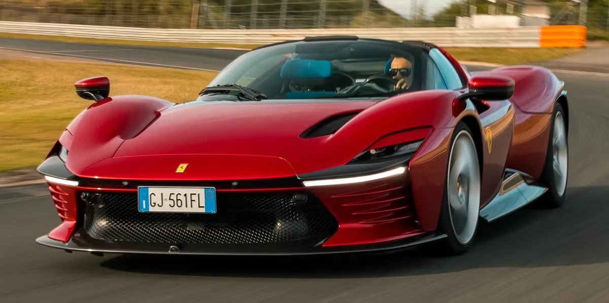
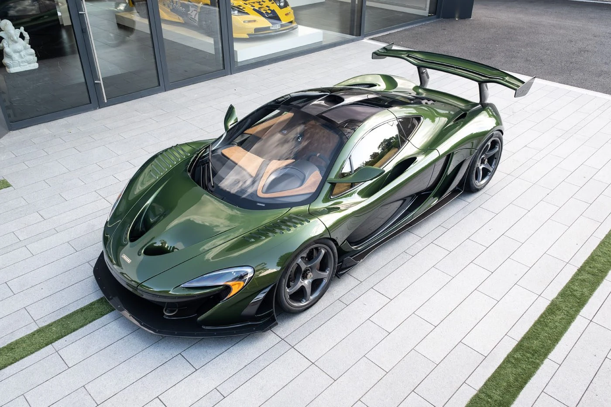
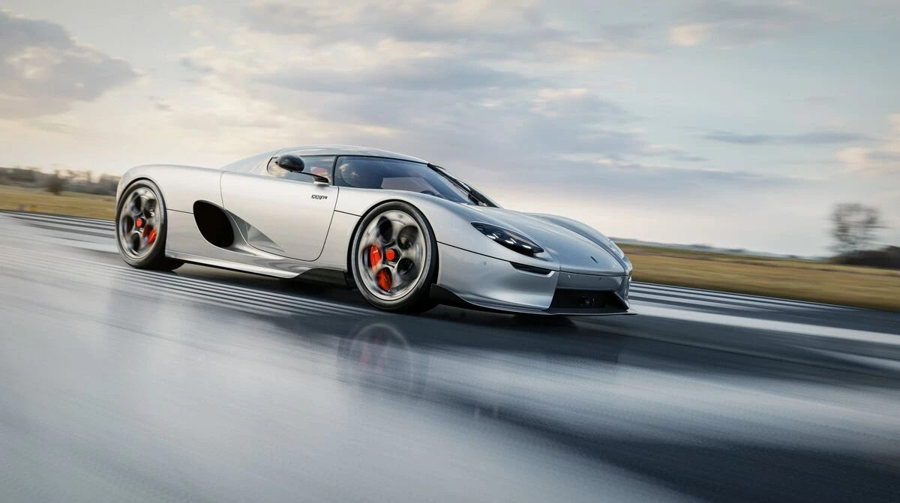
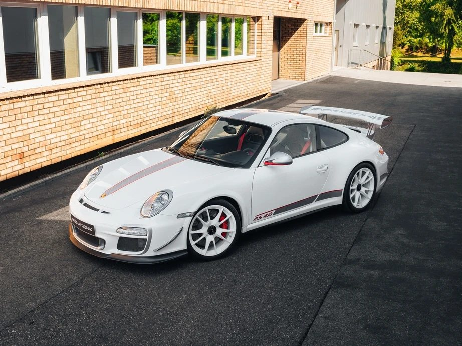
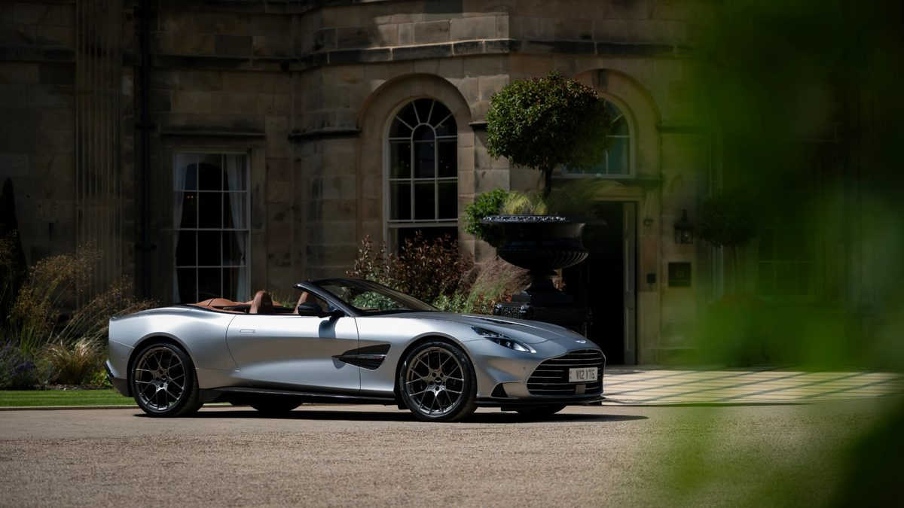
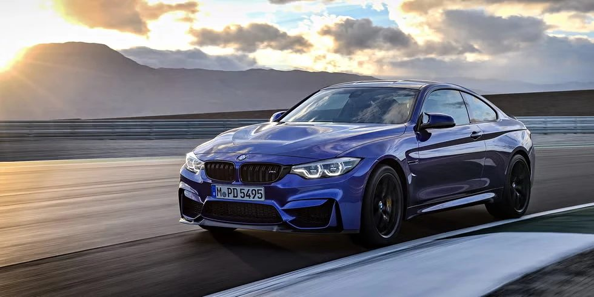

My favorite cars
the cars i'd drive, own, or just stare at.
The Ferrari Daytona SP3

absolutely phenomenal car. it just looks so good. in my opinion this is the modern laferrari.
The McLaren P1 HDK

this car is so good-looking it's insane. i've sat in one. not comfy, but the style is unmatched.
The Koenigsegg CC850

you can drive it as an automatic or as a manual. how freaking cool is that? i love driving manual cars.
The Porsche 911 GT3 RS 4.0 (997)

the 4.0 is super rare. only 600 cars made, and they were all made with manual transmissions. i rode in an RS 3.8 once and even that was an amazing car.
The 2026 Aston Martin Vanquish Volante

an absolute monster of a car. v12 up front, all the power to the rear wheels. this is the car you drive to the country club.
The 2018 BMW M4 CS

BMWs have been trending hard online lately, which kind of annoys me because i like liking niche cars. but this car is just amazing in my eyes. my family loves BMWs too, and i've been dreaming about this car since i was 10.